Sử dụng TileSet
Giới thiệu
Tilemap là một lưới các tile dùng để tạo bố cục cho game. Việc dùng các node TileMapLayer để thiết kế màn chơi mang lại nhiều lợi ích. Thứ nhất, chúng cho phép bạn vẽ bố cục bằng cách "tô" các tile lên lưới, nhanh hơn nhiều so với việc đặt từng node Sprite2D một. Thứ hai, chúng cho phép tạo các màn chơi lớn hơn vì được tối ưu để vẽ số lượng lớn tile. Cuối cùng, chúng cho phép bạn bổ sung thêm chức năng cho tile với các shape va chạm, che khuất (occlusion) và navigation.
Để dùng node TileMapLayer, trước tiên bạn cần tạo một TileSet. TileSet là một tập hợp các tile có thể đặt vào node TileMapLayer. Sau khi tạo TileSet, bạn sẽ có thể đặt chúng bằng trình chỉnh sửa TileMap.
Để làm theo hướng dẫn này, bạn cần một hình ảnh chứa các tile, trong đó mọi tile có cùng kích thước (các đối tượng lớn có thể được chia thành nhiều tile). Hình ảnh này được gọi là tilesheet. Tile không nhất thiết phải là hình vuông: chúng có thể là hình chữ nhật, lục giác hoặc isometric (phối cảnh giả 3D).
Tạo TileSet mới
Sử dụng tilesheet
Phần minh họa này sẽ dùng các tile sau lấy từ gói "Abstract Platformer" của Kenney. Chúng ta sẽ dùng tilesheet cụ thể này từ bộ đó:

Tạo một node TileMapLayer mới, sau đó chọn nó và tạo một resource TileSet mới trong Inspector:
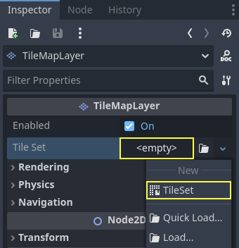
Tạo một resource TileSet mới bên trong node TileMapLayer
Sau khi tạo resource TileSet, hãy nhấp vào giá trị để mở rộng nó trong Inspector. Hình dạng tile mặc định là Square, nhưng bạn cũng có thể chọn Isometric, Half-Offset Square hoặc Hexagon (tùy theo hình dạng của ảnh tile). Nếu dùng hình dạng tile khác Square, bạn cũng có thể cần điều chỉnh các thuộc tính Tile Layout và Tile Offset Axis. Cuối cùng, bật thuộc tính Rendering > UV Clipping có thể hữu ích nếu bạn muốn tile bị cắt theo tọa độ tile của chúng. Điều này đảm bảo tile không thể vẽ ra ngoài vùng được cấp phát trên tilesheet.
Đặt kích thước tile thành 64×64 trong Inspector để khớp với tilesheet ví dụ:

Đặt kích thước tile thành 64×64 để khớp với tilesheet ví dụ
Nếu dựa vào việc tạo tile tự động (như chúng ta sắp làm ở đây), bạn phải đặt kích thước tile trước khi tạo atlas. Atlas sẽ xác định những tile nào từ tilesheet có thể được thêm vào node TileMapLayer (vì không phải phần nào của hình ảnh cũng là tile hợp lệ).
Mở bảng TileSet ở cuối trình chỉnh sửa, sau đó nhấp và kéo ảnh tilesheet vào bảng. Bạn sẽ được hỏi có muốn tạo tile tự động hay không. Hãy chọn Yes:

Tự động tạo tile dựa trên nội dung ảnh tilesheet
Thao tác này sẽ tự động tạo tile theo kích thước tile bạn đã chỉ định trước đó trong resource TileSet. Điều này giúp tăng tốc đáng kể việc thiết lập tile ban đầu.
Ghi chú
Khi dùng tính năng tạo tile tự động dựa trên nội dung hình ảnh, những phần của tilesheet trong suốt hoàn toàn sẽ không được tạo tile.
Nếu có những tile từ tilesheet mà bạn không muốn có trong atlas, hãy chọn công cụ Eraser ở đầu bản xem trước tileset, rồi nhấp vào các tile bạn muốn xóa:
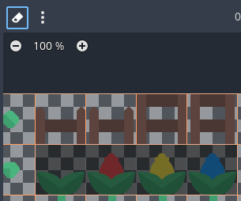
Dùng công cụ Eraser để xóa các tile không mong muốn khỏi atlas của TileSet
Bạn cũng có thể nhấp chuột phải vào một tile và chọn Delete, thay cho công cụ Eraser.
Mẹo
Giống như trong trình chỉnh sửa 2D và TileMap, bạn có thể di chuyển khung nhìn trong bảng TileSet bằng chuột giữa hoặc chuột phải, và thu phóng bằng con lăn chuột hoặc các nút ở góc trên bên trái.
Nếu bạn muốn lấy tile từ nhiều ảnh tilesheet cho một TileSet duy nhất, hãy tạo thêm atlas và gán texture cho từng atlas trước khi tiếp tục. Bạn cũng có thể dùng mỗi ảnh cho một tile theo cách này (mặc dù nên dùng tilesheet để thuận tiện hơn).
Bạn có thể điều chỉnh các thuộc tính của atlas ở cột giữa:
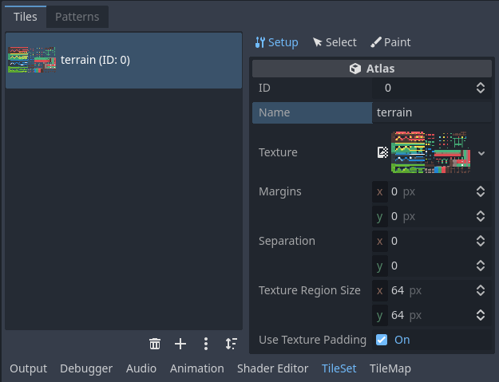
Điều chỉnh thuộc tính atlas của TileSet trong Inspector riêng (một phần của bảng TileSet)
Có thể điều chỉnh các thuộc tính sau trên atlas:
ID: Định danh (duy nhất trong TileSet này), dùng để sắp xếp.
Name: Tên dễ đọc của atlas. Hãy dùng tên mang tính mô tả để dễ tổ chức (chẳng hạn "terrain", "decoration", v.v.).
Margins: Lề trên các cạnh của hình ảnh không được phép chọn làm tile (tính bằng pixel). Tăng giá trị này có thể hữu ích nếu bạn tải về một ảnh tilesheet có lề ở các cạnh (ví dụ để ghi nguồn).
Separation: Khoảng cách giữa các tile trên atlas, tính bằng pixel. Tăng giá trị này có thể hữu ích nếu ảnh tilesheet bạn dùng có các đường gióng (chẳng hạn đường viền giữa mọi tile).
Texture Region Size: Kích thước của mỗi tile trên atlas, tính bằng pixel. Trong hầu hết trường hợp, giá trị này nên khớp với kích thước tile được định nghĩa trong thuộc tính của TileMapLayer (dù điều này không thực sự bắt buộc).
Use Texture Padding: Nếu được chọn, sẽ thêm một viền trong suốt 1 pixel quanh mỗi tile để ngăn texture bị lem khi bật lọc (filtering). Bạn nên để tùy chọn này bật trừ khi gặp vấn đề kết xuất do texture padding.
Lưu ý rằng việc thay đổi lề texture, khoảng cách và kích thước vùng có thể khiến tile bị mất (vì một số tile sẽ nằm ngoài tọa độ của ảnh atlas). Để tạo lại tile tự động từ tilesheet, hãy dùng nút menu ba chấm dọc ở đầu trình chỉnh sửa TileSet và chọn Create Tiles in Non-Transparent Texture Regions:
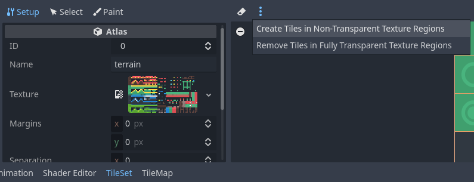
Tự động tạo lại tile sau khi thay đổi thuộc tính atlas
Dùng một tập hợp scene
Bạn cũng có thể đặt các scene thực sự làm tile. Điều này cho phép bạn dùng bất kỳ tập hợp node nào làm tile. Ví dụ, bạn có thể dùng scene tile để đặt các yếu tố gameplay, chẳng hạn như cửa hàng mà người chơi có thể tương tác. Bạn cũng có thể dùng scene tile để đặt AudioStreamPlayer2D (cho âm thanh môi trường), hiệu ứng hạt và nhiều thứ khác.
Cảnh báo
Scene tile có chi phí hiệu năng cao hơn so với atlas, vì mỗi scene được tạo instance riêng cho từng tile được đặt.
Bạn chỉ nên dùng scene tile khi cần thiết. Để vẽ sprite trong một tile mà không cần thao tác nâng cao nào, hãy dùng atlas thay thế.
Trong ví dụ này, chúng ta sẽ tạo một scene chứa node gốc CPUParticles2D. Lưu scene này vào một tệp scene (tách biệt với scene chứa TileMapLayer), sau đó chuyển sang scene chứa node TileMapLayer. Mở trình chỉnh sửa TileSet và tạo một Scenes Collection mới ở cột bên trái:
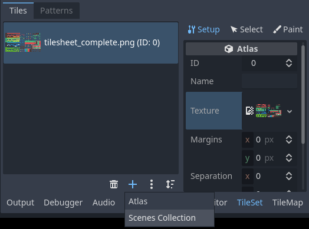
Tạo bộ sưu tập scene trong trình chỉnh sửa TileSet
Sau khi tạo scenes collection, bạn có thể nhập tên mô tả cho scenes collection ở cột giữa nếu muốn. Chọn scenes collection này rồi tạo một scene slot mới:

Tạo một scene tile sau khi chọn scenes collection trong trình chỉnh sửa TileSet
Chọn scene slot này ở cột bên phải, sau đó dùng Quick Load (hoặc Load) để tải tệp scene chứa hạt:
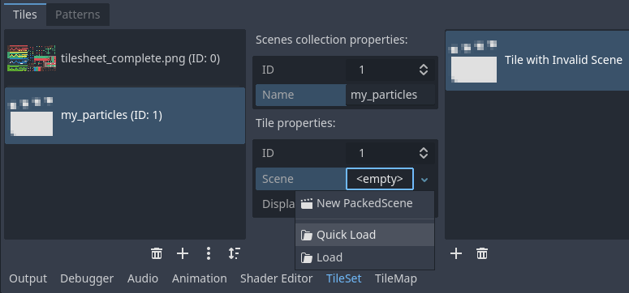
Tạo một scene slot, rồi tải một tệp scene vào đó trong trình chỉnh sửa TileSet
Giờ bạn đã có một scene tile trong TileSet. Khi chuyển sang trình chỉnh sửa TileMap, bạn sẽ có thể chọn nó từ scenes collection và vẽ nó như bất kỳ tile nào khác.
Gộp nhiều atlas thành một atlas duy nhất
Dùng nhiều atlas trong một resource TileSet đôi khi có thể hữu ích, nhưng cũng có thể gây bất tiện trong một số tình huống (đặc biệt nếu bạn dùng mỗi ảnh cho một tile). Godot cho phép bạn gộp nhiều atlas thành một atlas duy nhất để dễ tổ chức hơn.
Để làm vậy, bạn phải có nhiều hơn một atlas được tạo trong resource TileSet. Dùng nút menu "ba chấm dọc" nằm ở cuối danh sách atlas, rồi chọn Open Atlas Merging Tool:

Mở công cụ gộp atlas sau khi tạo nhiều atlas
Thao tác này sẽ mở một hộp thoại, trong đó bạn có thể chọn nhiều atlas bằng cách giữ Shift hoặc Ctrl rồi nhấp vào nhiều phần tử:
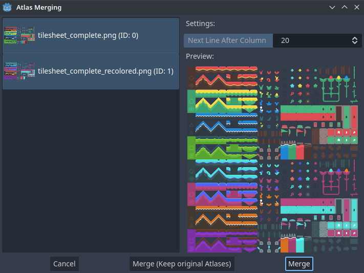
Dùng hộp thoại công cụ gộp atlas
Chọn Merge để gộp các atlas đã chọn thành một ảnh atlas duy nhất (tương ứng với một atlas duy nhất trong TileSet). Các atlas chưa gộp sẽ bị xóa khỏi TileSet, nhưng các ảnh tilesheet gốc vẫn được giữ trên hệ thống tệp. Nếu bạn không muốn các atlas chưa gộp bị xóa khỏi resource TileSet, hãy chọn Merge (Keep Original Atlases).
Mẹo
TileSet có một hệ thống tile proxy. Tile proxy là một bảng ánh xạ cho phép thông báo cho TileMap dùng TileSet đó rằng một tập định danh tile nhất định nên được thay bằng một tập khác.
Tile proxy được tự động thiết lập khi gộp các atlas khác nhau, nhưng cũng có thể được đặt thủ công nhờ hộp thoại Manage Tile Proxies mà bạn truy cập qua menu "ba chấm dọc" đã nêu ở trên.
Tạo tile proxy thủ công có thể hữu ích khi bạn đã thay đổi ID atlas hoặc muốn thay toàn bộ tile của một atlas bằng tile của atlas khác. Lưu ý rằng khi chỉnh sửa một TileMap, bạn có thể thay tất cả các ô bằng giá trị ánh xạ tương ứng của chúng.
Thêm va chạm, navigation và occlusion cho TileSet
Giờ chúng ta đã tạo thành công một TileSet cơ bản. Ta có thể bắt đầu dùng nó trong node TileMapLayer ngay, nhưng hiện tại nó chưa có bất kỳ hình thức phát hiện va chạm nào. Điều này nghĩa là người chơi và các đối tượng khác có thể đi xuyên qua sàn hoặc tường.
Nếu bạn dùng navigation 2D, bạn cũng cần định nghĩa navigation polygon cho các tile để tạo navigation mesh mà các agent có thể dùng để tìm đường.
Cuối cùng, nếu bạn dùng Ánh sáng và bóng đổ 2D hoặc GPUParticles2D, bạn cũng có thể muốn TileSet có khả năng đổ bóng và va chạm với hạt. Việc này yêu cầu định nghĩa occluder polygon cho các tile "đặc" trên TileSet.
Để có thể định nghĩa các shape va chạm, navigation và occlusion cho từng tile, trước tiên bạn cần tạo một physics layer, navigation layer hoặc occlusion layer cho resource TileSet. Để làm vậy, hãy chọn node TileMapLayer, nhấp vào giá trị thuộc tính TileSet trong Inspector để chỉnh sửa, rồi mở rộng Physics Layers và chọn Add Element:
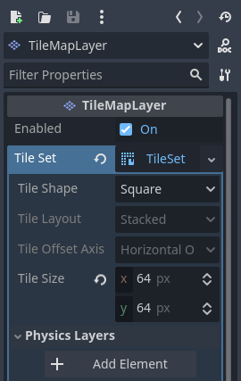
Tạo một physics layer trong Inspector của resource TileSet (bên trong node TileMapLayer)
Nếu bạn cũng cần hỗ trợ navigation, đây là lúc thích hợp để tạo navigation layer:

Tạo một navigation layer trong Inspector của resource TileSet (bên trong node TileMapLayer)
Nếu bạn cần hỗ trợ light polygon occluder, đây là lúc thích hợp để tạo occlusion layer:

Tạo một occlusion layer trong Inspector của resource TileSet (bên trong node TileMapLayer)
Ghi chú
Các bước tiếp theo trong bài hướng dẫn này tập trung vào việc tạo collision polygon, nhưng quy trình cho navigation và occlusion rất giống nhau. Các trình chỉnh sửa polygon tương ứng hoạt động theo cùng một cách, nên các bước này không được lặp lại cho ngắn gọn.
Lưu ý duy nhất là thuộc tính occlusion polygon của tile nằm trong mục con Rendering của Inspector atlas. Hãy nhớ mở rộng mục này để có thể chỉnh sửa polygon.
Sau khi tạo physics layer, bạn có thể truy cập mục Physics Layer trong Inspector atlas của TileSet:

Mở trình chỉnh sửa va chạm khi đang ở chế độ Select
Bạn có thể nhanh chóng tạo một collision shape hình chữ nhật bằng cách nhấn F khi trình chỉnh sửa TileSet đang được focus. Nếu phím tắt không hoạt động, hãy thử nhấp vào vùng trống quanh trình chỉnh sửa polygon để focus nó:

Dùng collision shape hình chữ nhật mặc định bằng cách nhấn F
Trong trình chỉnh sửa va chạm tile này, bạn có thể dùng tất cả công cụ chỉnh sửa polygon 2D:
Dùng thanh công cụ phía trên polygon để chuyển giữa tạo polygon mới, chỉnh sửa polygon có sẵn và xóa điểm trên polygon. Nút menu "ba chấm dọc" cung cấp thêm các tùy chọn, chẳng hạn như xoay và lật polygon.
Tạo điểm mới bằng cách nhấp và kéo một đoạn thẳng giữa hai điểm.
Xóa một điểm bằng cách nhấp chuột phải vào nó (hoặc dùng công cụ Remove đã mô tả ở trên và nhấp chuột trái).
Di chuyển khung nhìn trong trình chỉnh sửa bằng cách nhấp chuột giữa hoặc chuột phải. (Chỉ có thể di chuyển bằng chuột phải ở những vùng không có điểm nào ở gần.)
Bạn có thể dùng hình chữ nhật mặc định để nhanh chóng tạo collision shape hình tam giác bằng cách xóa một trong các điểm:

Tạo collision shape hình tam giác bằng cách nhấp chuột phải vào một góc để xóa nó
Bạn cũng có thể dùng hình chữ nhật làm nền tảng cho các hình phức tạp hơn bằng cách thêm điểm:

Vẽ collision tùy chỉnh cho một hình dạng tile phức tạp
Mẹo
Nếu bạn có một tileset lớn, việc chỉ định va chạm cho từng tile riêng lẻ có thể tốn nhiều thời gian. Điều này càng đúng khi TileMap thường có nhiều tile với mẫu va chạm chung (chẳng hạn khối đặc hoặc dốc 45 độ). Để nhanh chóng áp dụng một collision shape tương tự cho nhiều tile, hãy dùng tính năng gán thuộc tính cho nhiều tile cùng lúc.
Gán metadata tùy chỉnh cho các tile của TileSet
Bạn có thể gán dữ liệu tùy chỉnh cho từng tile bằng custom data layer. Điều này có thể hữu ích để lưu thông tin riêng cho game của bạn, chẳng hạn như lượng sát thương mà một tile gây ra khi người chơi chạm vào, hoặc một tile có thể bị phá hủy bằng vũ khí hay không.
Dữ liệu được gắn với tile trong TileSet: tất cả instance của tile được đặt sẽ dùng cùng một dữ liệu tùy chỉnh. Nếu bạn cần tạo một biến thể của tile với dữ liệu tùy chỉnh khác, bạn có thể làm điều đó bằng cách tạo một alternative tile và chỉ thay đổi dữ liệu tùy chỉnh cho alternative tile đó.

Tạo một custom data layer trong Inspector của resource TileSet (bên trong node TileMapLayer)
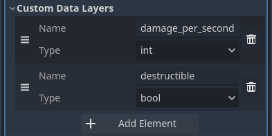
Ví dụ về các custom data layer đã cấu hình với các thuộc tính riêng của game
Bạn có thể sắp xếp lại dữ liệu tùy chỉnh mà không làm hỏng metadata hiện có: trình chỉnh sửa TileSet sẽ tự động cập nhật sau khi sắp xếp lại các thuộc tính dữ liệu tùy chỉnh.
Với ví dụ custom data layer ở trên, ta gán cho một tile metadata damage_per_second là 25 và metadata destructible là false:
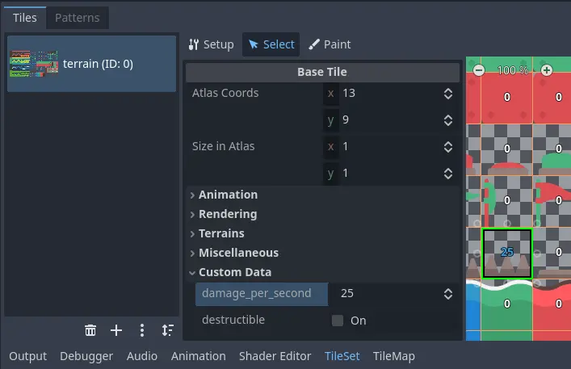
Chỉnh sửa dữ liệu tùy chỉnh trong trình chỉnh sửa TileSet khi đang ở chế độ Select
Vẽ thuộc tính tile cũng có thể dùng cho dữ liệu tùy chỉnh:

Gán dữ liệu tùy chỉnh trong trình chỉnh sửa TileSet bằng cách vẽ thuộc tính tile
Tạo terrain set (autotiling)
Ghi chú
Tính năng này từng được triển khai dưới một dạng khác là autotiling trong Godot 3.x. Về cơ bản, terrain là sự thay thế mạnh mẽ hơn cho autotile. Không giống autotile, terrain có thể hỗ trợ chuyển tiếp từ terrain này sang terrain khác, vì một tile có thể định nghĩa nhiều terrain cùng lúc.
Khác với trước đây khi autotile là một loại tile riêng, terrain chỉ là một tập thuộc tính được gán cho các tile của atlas. Các thuộc tính này sau đó được dùng bởi một chế độ vẽ TileMap chuyên biệt, giúp chọn các tile có dữ liệu terrain một cách thông minh. Điều này nghĩa là bất kỳ terrain tile nào cũng có thể được vẽ dưới dạng terrain hoặc như một tile đơn lẻ, giống mọi tile khác.
Một tileset "chỉn chu" thường có các biến thể dành cho góc hoặc cạnh của nền, sàn, v.v. Dù có thể đặt chúng thủ công, việc này nhanh chóng trở nên tẻ nhạt. Xử lý tình huống này với các màn chơi được tạo thủ tục (procedural) cũng có thể khó và đòi hỏi nhiều code.
Godot cung cấp terrain để tự động thực hiện kiểu kết nối tile này. Nhờ đó bạn có thể tự động dùng đúng biến thể tile "phù hợp".
Terrain được nhóm thành các terrain set. Mỗi terrain set được gán một chế độ trong số Match Corners and Sides, Match Corners và Match sides. Chúng xác định cách các terrain được khớp với nhau trong một terrain set.
Ghi chú
Các chế độ trên tương ứng với các chế độ bitmask trước đây mà autotile dùng trong Godot 3.x: 2×2, 3×3 hoặc 3×3 minimal. Điều này cũng tương tự những gì trình chỉnh sửa Tiled cung cấp.
Chọn node TileMapLayer, vào Inspector và tạo một terrain set mới bên trong resource TileSet:

Tạo một terrain set trong Inspector của resource TileSet (bên trong node TileMapLayer)
Sau khi tạo terrain set, bạn phải tạo một hoặc nhiều terrain bên trong terrain set đó:
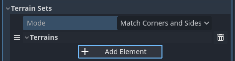
Tạo terrain trong terrain set
Trong trình chỉnh sửa TileSet, chuyển sang chế độ Select và nhấp vào một tile. Ở cột giữa, mở rộng mục Terrains rồi gán ID terrain set và ID terrain cho tile. -1 nghĩa là "không có terrain set" hoặc "không có terrain", tức là bạn phải đặt Terrain Set từ 0 trở lên trước khi có thể đặt Terrain từ 0 trở lên.
Ghi chú
ID terrain set và ID terrain độc lập với nhau. Chúng cũng bắt đầu từ 0, không phải 1.
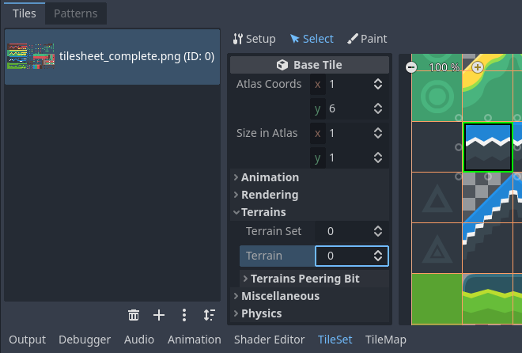
Cấu hình terrain trên một tile trong chế độ Select của trình chỉnh sửa TileSet
Sau khi làm vậy, bạn có thể cấu hình mục Terrain Peering Bits vừa xuất hiện ở cột giữa. Các peering bit xác định tile nào sẽ được đặt tùy thuộc vào các tile lân cận. -1 là một giá trị đặc biệt chỉ khoảng trống.
Ví dụ, nếu một tile có tất cả bit được đặt từ 0 trở lên, nó chỉ xuất hiện nếu cả 8 tile lân cận đều dùng tile có cùng ID terrain. Nếu một tile có các bit được đặt từ 0 trở lên, nhưng các bit trên-trái, trên và trên-phải được đặt là -1, nó chỉ xuất hiện nếu có khoảng trống phía trên nó (kể cả theo đường chéo).

Cấu hình terrain peering bit trên một tile trong chế độ Select của trình chỉnh sửa TileSet
Một cấu hình ví dụ cho một tilesheet đầy đủ có thể trông như sau:

Ví dụ tilesheet đầy đủ cho một game cuộn ngang
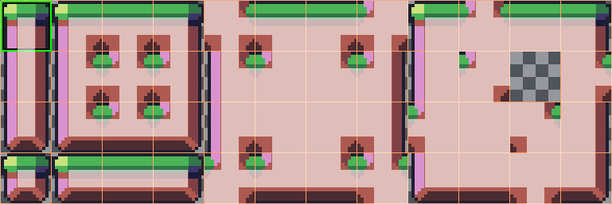
Ví dụ tilesheet đầy đủ cho một game cuộn ngang với terrain peering bit hiển thị
Gán thuộc tính cho nhiều tile cùng lúc
Có hai cách để gán thuộc tính cho nhiều tile cùng lúc. Tùy theo trường hợp sử dụng, cách này có thể nhanh hơn cách kia:
Dùng chọn nhiều tile
Nếu bạn muốn cấu hình nhiều thuộc tính trên nhiều tile cùng lúc, hãy chọn chế độ Select ở đầu trình chỉnh sửa TileSet:
Sau đó, bạn có thể chọn nhiều tile ở cột bên phải bằng cách giữ Shift rồi nhấp vào các tile. Bạn cũng có thể chọn bằng hình chữ nhật bằng cách giữ chuột trái rồi kéo chuột. Cuối cùng, bạn có thể bỏ chọn các tile đã được chọn (mà không ảnh hưởng đến phần còn lại của vùng chọn) bằng cách giữ Shift rồi nhấp vào một tile đã chọn.
Sau đó, bạn có thể gán thuộc tính bằng Inspector ở cột giữa của trình chỉnh sửa TileSet. Chỉ những thuộc tính bạn thay đổi ở đây mới được áp dụng cho tất cả tile đã chọn. Giống như trong Inspector của trình chỉnh sửa, các thuộc tính khác nhau giữa các tile đã chọn sẽ vẫn khác nhau cho đến khi bạn chỉnh sửa chúng.
Với các thuộc tính số và màu, bạn cũng sẽ thấy bản xem trước giá trị của thuộc tính trên tất cả tile trong atlas sau khi chỉnh sửa thuộc tính:

Chọn nhiều tile bằng chế độ Select, rồi áp dụng thuộc tính
Sử dụng tính năng vẽ thuộc tính tile
Nếu bạn muốn áp dụng một thuộc tính duy nhất cho nhiều tile cùng lúc, bạn có thể dùng chế độ vẽ thuộc tính cho mục đích này.
Cấu hình thuộc tính cần vẽ ở cột giữa, sau đó nhấp vào các tile (hoặc giữ chuột trái) ở cột bên phải để "vẽ" thuộc tính lên tile.

Vẽ thuộc tính tile bằng trình chỉnh sửa TileSet
Vẽ thuộc tính tile đặc biệt hữu ích với những thuộc tính tốn thời gian khi đặt thủ công, chẳng hạn như collision shape:

Vẽ một collision polygon, rồi nhấp chuột trái vào các tile để áp dụng nó
Tạo tile thay thế
Đôi khi, bạn muốn dùng một ảnh tile duy nhất (chỉ xuất hiện một lần trong atlas), nhưng được cấu hình theo nhiều cách khác nhau. Ví dụ, bạn có thể muốn dùng cùng ảnh tile nhưng được xoay, lật hoặc nhuộm (modulate) với màu khác. Việc này có thể thực hiện bằng alternative tile.
Mẹo
Kể từ Godot 4.2, bạn không còn phải tạo alternative tile để xoay hoặc lật tile nữa. Bạn có thể xoay bất kỳ tile nào khi đặt nó trong trình chỉnh sửa TileMap bằng các nút xoay/lật trên thanh công cụ của trình chỉnh sửa TileMap.
Để tạo một alternative tile, hãy nhấp chuột phải vào một tile gốc trong atlas được hiển thị bởi trình chỉnh sửa TileSet, rồi chọn Create an Alternative Tile:

Tạo một alternative tile bằng cách nhấp chuột phải vào tile gốc trong trình chỉnh sửa TileSet
Nếu đang ở chế độ Select, alternative tile sẽ được chọn sẵn để chỉnh sửa. Nếu không ở chế độ Select, bạn vẫn có thể tạo alternative tile, nhưng sẽ cần chuyển sang chế độ Select và chọn alternative tile để chỉnh sửa nó.
Nếu bạn không thấy alternative tile, hãy di chuyển khung nhìn sang bên phải của ảnh atlas, vì alternative tile luôn xuất hiện ở bên phải các tile gốc của atlas tương ứng trong trình chỉnh sửa TileSet:

Cấu hình một alternative tile sau khi nhấp vào nó trong trình chỉnh sửa TileSet
Sau khi chọn một alternative tile, bạn có thể thay đổi bất kỳ thuộc tính nào bằng cột giữa giống như với tile gốc. Tuy nhiên, danh sách thuộc tính được hiển thị sẽ khác so với tile gốc:
Alternative ID: Định danh số duy nhất của alternative tile này. Thay đổi nó sẽ làm hỏng các TileMap hiện có, vì vậy hãy cẩn thận! ID này cũng quyết định thứ tự sắp xếp trong danh sách alternative tile hiển thị trong trình chỉnh sửa.
Rendering > Flip H: Nếu
true, tile sẽ được lật theo chiều ngang.Rendering > Flip V: Nếu
true, tile sẽ được lật theo chiều dọc.Rendering > Transpose: Nếu
true, tile sẽ được xoay 90 độ ngược chiều kim đồng hồ rồi lật theo chiều dọc. Trên thực tế, điều này có nghĩa là để xoay tile 90 độ theo chiều kim đồng hồ mà không lật, bạn nên bật Flip H và Transpose. Để xoay tile 180 độ theo chiều kim đồng hồ, hãy bật Flip H và Flip V. Để xoay tile 270 độ theo chiều kim đồng hồ, hãy bật Flip V và Transpose.Rendering > Texture Origin: Gốc tọa độ dùng để vẽ tile. Có thể dùng thuộc tính này để dịch chuyển tile về mặt hình ảnh so với tile gốc.
Rendering > Modulate: Hệ số nhân màu dùng khi kết xuất tile.
Rendering > Material: Material dùng cho tile này. Có thể dùng thuộc tính này để áp dụng một blend mode khác hoặc shader tùy chỉnh cho một tile duy nhất.
Z Index: Thứ tự sắp xếp của tile này. Giá trị cao hơn sẽ khiến tile được kết xuất phía trước các tile khác trên cùng layer.
Y Sort Origin: Độ lệch theo chiều dọc dùng để sắp xếp tile dựa trên tọa độ Y của nó (tính bằng pixel). Điều này cho phép dùng các layer như thể chúng ở các độ cao khác nhau trong game góc nhìn từ trên xuống. Điều chỉnh giá trị này có thể giúp giảm bớt vấn đề sắp xếp ở một số tile. Chỉ có hiệu lực nếu Y Sort Enabled là
truetrên node TileMapLayer trong mục CanvasItem > Ordering
Bạn có thể tạo thêm một biến thể alternative tile bằng cách nhấp vào biểu tượng "+" lớn cạnh alternative tile. Thao tác này tương đương với việc chọn tile gốc và nhấp chuột phải vào nó để chọn lại Create an Alternative Tile.
Ghi chú
Khi tạo một alternative tile, không thuộc tính nào của tile gốc được kế thừa. Bạn phải đặt lại thuộc tính trên alternative tile nếu muốn chúng giống nhau trên tile gốc và alternative tile.